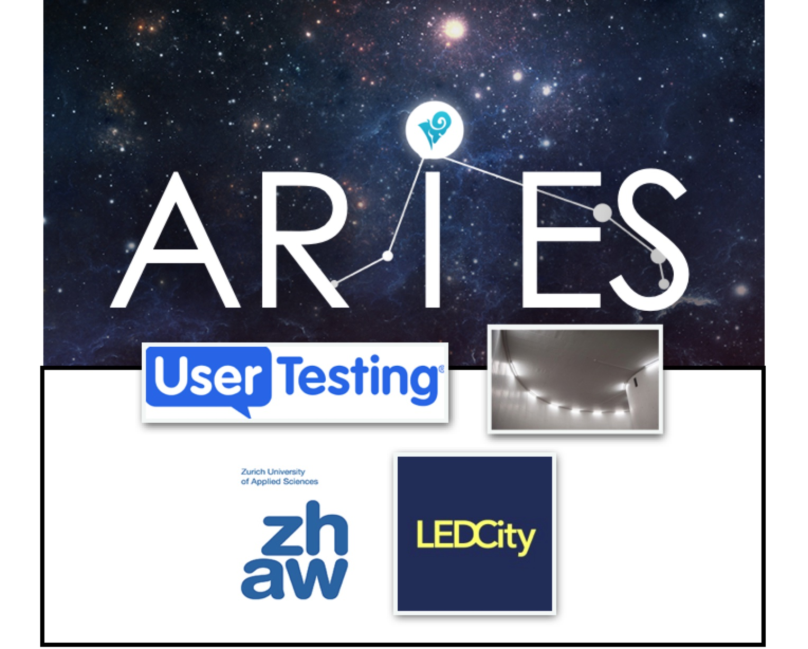

Grants and EU projects
Hasler Foundation Project (2025-10 to 2025-11) Sebastiano Panichella is organizing "The International Software Engineering Winter School on Hybrid and Generative Intelligence". The school will be held from 24–28 November 2025 in Bern and Fribourg, Switzerland, as part of the EU-funded Innoguard Project. This inaugural Winter School brings together academic and industrial researchers, along with Ph.D. students, to explore cutting-edge topics at the intersection of Software Engineering, Hybrid Intelligence, and Generative AI, with a special focus on Large Language Models (LLMs) and their transformative role in next-generation software systems. The program combines technical training, hands-on workshops, research presentations, and interactive discussions with social and industrial engagement, including visits to the Einstein Museum and LOXO, an autonomous vehicle company. Participants will acquire practical experience in research management, scientific writing, empirical methods, open science practices, and dissemination in open-source ecosystems. Expected participants include 35–40 researchers and students from across Europe, guided by leading experts from institutions such as the University of Bern, Vrije Universiteit Amsterdam, University of Lugano, University of Sannio, Mondragon University, University of Malaga, and Oslo Metropolitan University. This Winter School provides a unique platform for interdisciplinary collaboration, skill development, and exposure to industry applications, fostering the next generation of researchers in hybrid and generative software engineering. Funding from the Hasler Foundation will support travel, accommodation, inclusive participation, and the execution of the social and industrial engagement day, ensuring broad access and high-impact outcomes. Sebastiano Panichella got funding from "Hasler Foundation Project" supporting the event (Project Number 2025-09-14-688). Cost of the event are partially covered by the InnoGuard EU Project. Total project 6,000 CHF
Innosuisse project (2025-2028) Innosuisse project title: "BioAI4LCMS: Automated LC-MS through AIbased and Generative Intelligence Technology Application" (Number: 124.073 IP-ICT). The Innosuisse is supporting a project with the interdisciplinary focus of bringing together expertise in biopharmaceutical R&D, AI/ML technologies, and software engineering (from 2025-10-01) Total project 1.2 MIL CHF (working hours allocated to it), Sebastiano Panichella got direct funding for around 426,471 CHF Ack: We personally thank the team of Genedata for the very productive and constant research meetings.
University of Bern: Teaching & Seed Funding (2025-2026) Sebastiano Panichella got funding (as main research responsible ) by two different internal funding calls of the University of Bern The first project is called "Seed funding", aimed at supporting funding acquisition actions of UniBe applicants for Horizon project. The second project is for "Interdisciplinary teaching": UniBe is supporting Sebastiano Panichella teaching initiatives on courses between Robotics, AI, Software Engineering and the Faculty of Laws (concerning e.g., regulatory aspects and ethics in AI and autonomous cyber-physical systems). Total of the two internal project 24,000 CHF (working hours allocated to it), Sebastiano Panichella got direct funding for around 17,000 CHF
Hasler Foundation Project (2025-04 to 2026-03) Sebastiano Panichella got funding (as co-applicant with Atefeh Rohani) for a "Hasler Foundation Project": “Safe-2-Fly: Advancing Unmanned Aerial Vehicles Reliability and Societal Trust Through Integrated Testing and Formal Verification” (Project Number 2025-02-27-311). Total project 50,000 CHF
InnoGuard EU Project (Marie Skłodowska-Curie Actions-funded Doctoral Networks") Project (2024-2028) Sebastiano Panichella got funding (as main research responsible at UniBe ) from the Horizon EU Call "Marie Skłodowska-Curie Actions-funded Doctoral Networks" for the project "InnoGuard: Hybrid and Generative Intelligence for Trustworthy Autonomous Cyber-Physical Systems" (Grant agreement ID: 101169233). The funding will involve research on Trustworthiness Autonomous Cyber-Physical Systems. Link to the project: https://www.innoguard.eu/index.html Total project around 5MIL EUR. Budget for UniBe is of 607,132.8 EUR (595,779.42 CHF)
SWARMOPS SNSF (Swiss National Science Foundation) Project (2024-2028) Sebastiano Panichella got funding (as main research responsible ) from the SNSF (Swiss National Science Foundation) for the project "SwarmOps: Human-sensing based MLOps for Collaborative Cyber-physical systems" (https://data.snf.ch/grants/person/673835). The funding will support two new Ph.D. students and complement the studies of existing ones in his team. Total project 667,280 CHF
Hasler Foundation Project (2024-2025) Sebastiano Panichella got funding (as main research responsible ) for a "Hasler Foundation Project": Aerialist - Bridging the Reality Gap in Testing Unmanned Aerial Vehicles (Project Number 23064) The funding support and complement the studies of Sajad Khatiri, Ph.D. student working “Testing Unmanned Aerial Vehicles” in the context of the COSMOS H2020 project (contract no. 957254). Link to the project: https://skhatiri.github.io/Aerialist-Project/ Total project 50,000 CHF
COSMOS EU project (2020-2023)
 Sebastiano Panichella wrote an H2020 proposal (as technical coordinator) for the EU H2020-ICT-2018-20 call,
entitled "COSMOS - DevOps for Complex Cyber-physical Systems" (contract no. 957254). COSMOS was selected for funding by the H2020.
Much of the increasing complexity of ICT systems is being driven by the more distributed and heterogeneous nature of these systems,
with Cyber-Physical Systems accounting for an increasing portion of Software Ecosystems. This basic premise underpins the COSMOS proposal
which focuses on blending best practices DevOps solutions with the development processes used in the CPS context: this will enable the
CPS world to deliver software more rapidly and result in more secure and trustworthy systems.
COSMOS brings together a balanced consortium of big industry, SMEs and academics which will develop enhanced DevOps pipelines which target
development of CPS software.
The COSMOS CPS pipelines will be validated against 5 use cases provided by industrial partners representing healthcare, avionics,
automotive, utility and railway sectors. These will act as reference use cases when promoting the technology amongst Open Source
and standardization communities. For the former a specific community building activity will be performed to stimulate engagement
with Open Source; for the latter, the standards experience of the coordinator and partners will be employed to promote COSMOS
technologies within heavily regulated sectors where there is an increasing need for well-defined software V&V solutions.
Total H2020 project 5MIL EUR, Sebastiano Panichella got direct funding for 770,000 EUR
Ack: We personally thank Dr. Sean Murphy and Marc Rennhard for the important personal and professional support provided, critical to make the original COSMOS project proposal more convincing.
Project Link: https://www.cosmos-devops.org/
Sebastiano Panichella wrote an H2020 proposal (as technical coordinator) for the EU H2020-ICT-2018-20 call,
entitled "COSMOS - DevOps for Complex Cyber-physical Systems" (contract no. 957254). COSMOS was selected for funding by the H2020.
Much of the increasing complexity of ICT systems is being driven by the more distributed and heterogeneous nature of these systems,
with Cyber-Physical Systems accounting for an increasing portion of Software Ecosystems. This basic premise underpins the COSMOS proposal
which focuses on blending best practices DevOps solutions with the development processes used in the CPS context: this will enable the
CPS world to deliver software more rapidly and result in more secure and trustworthy systems.
COSMOS brings together a balanced consortium of big industry, SMEs and academics which will develop enhanced DevOps pipelines which target
development of CPS software.
The COSMOS CPS pipelines will be validated against 5 use cases provided by industrial partners representing healthcare, avionics,
automotive, utility and railway sectors. These will act as reference use cases when promoting the technology amongst Open Source
and standardization communities. For the former a specific community building activity will be performed to stimulate engagement
with Open Source; for the latter, the standards experience of the coordinator and partners will be employed to promote COSMOS
technologies within heavily regulated sectors where there is an increasing need for well-defined software V&V solutions.
Total H2020 project 5MIL EUR, Sebastiano Panichella got direct funding for 770,000 EUR
Ack: We personally thank Dr. Sean Murphy and Marc Rennhard for the important personal and professional support provided, critical to make the original COSMOS project proposal more convincing.
Project Link: https://www.cosmos-devops.org/
Innosuisse project (2020-2022)  Sebastiano Panichella wrote an Innosuisse project proposal (as main research responsible ) to the Innosuisse grant program, "ARIES: Exploiting User Journeys and Testing Automation for Supporting Efficient Energy Service Platforms" (project Nr. 45548.1 IP-ICT). ARIES brings together a consortium of two partners: the start-up LEDCity (https://ledcity.io/) and the ZHAW. ARIES project delivers a data oriented and software platform that implements requirements and testing engineering mechanisms to enhance customer experience. ARIES project is realized in the context of LEDCity, a Swiss start-up specialized in AI-based optimization of lighting systems. Total project 1 MIL CHF (working hours allocated to it), Sebastiano Panichella got direct funding for around 500,000 CHF Ack: We personally thank the team of LEDCity for the very productive and constant research meetings. Project Link: https://spanichella.github.io/projects/aries-devops/index.html
Doctoral funding at the SoE ZHAW (2022-2025) Sebastiano Panichella got funding (as main research responsible ) by the Doctoral funding at the SoE ZHAW. The funding program of the School of Engineering alongside the existing Cooperation partner programs in the field of data science, other programs, and others). The funding will support and complement the studies of a Ph.D. student working on “Testing Self-driving Cars” in the context of the COSMOS H2020 project (contract no. 957254). Total project 114,000 CHF (working hours allocated to it), Sebastiano Panichella got direct funding for around 114,000 CHF
SURF-MobileAppsData SNF project (2016-2019)
 Sebastiano Panichella obtained funding for the SURF-MobileAppsData SNF (No.
200021_166275) project. The goal of the SURF-MobileAppsData project is mining
mobile apps data available in app stores to support software engineers in better supporting maintenance and evolution activities for these apps (Total SNSF (CHF)
471,018). Link to the project: http://www.ifi.uzh.ch/en/seal/research/projects/SURF-MobileData.html
Sebastiano Panichella obtained funding for the SURF-MobileAppsData SNF (No.
200021_166275) project. The goal of the SURF-MobileAppsData project is mining
mobile apps data available in app stores to support software engineers in better supporting maintenance and evolution activities for these apps (Total SNSF (CHF)
471,018). Link to the project: http://www.ifi.uzh.ch/en/seal/research/projects/SURF-MobileData.html
MARKOS EU project (2013-2014) Sebastiano Panichella was partially funded with Gabriele Bavota, Gerardo Canfora, Massimiliano Di Penta, in the EU FP7-ICT-2011-8 project Markos, contract no. 317743. Specifically, the MARKOS project aimed to realize the prototype of a service and an interactive application providing an integrated view on the Open Source projects available the on web, focusing on functional, structural and licenses aspects of software code. My effort is focused on implementing relevant aspects of the Software System realized by Markos and and a generate new research results in the field of Software Engineering. Particular effort is spent on analysis of source code to study the evolution of software project to automatically extract reusable components from source code. From the other things I also extract licensing statements from the source code to monitor their evolution and avoid that changes in source code also generate the break of licenses.